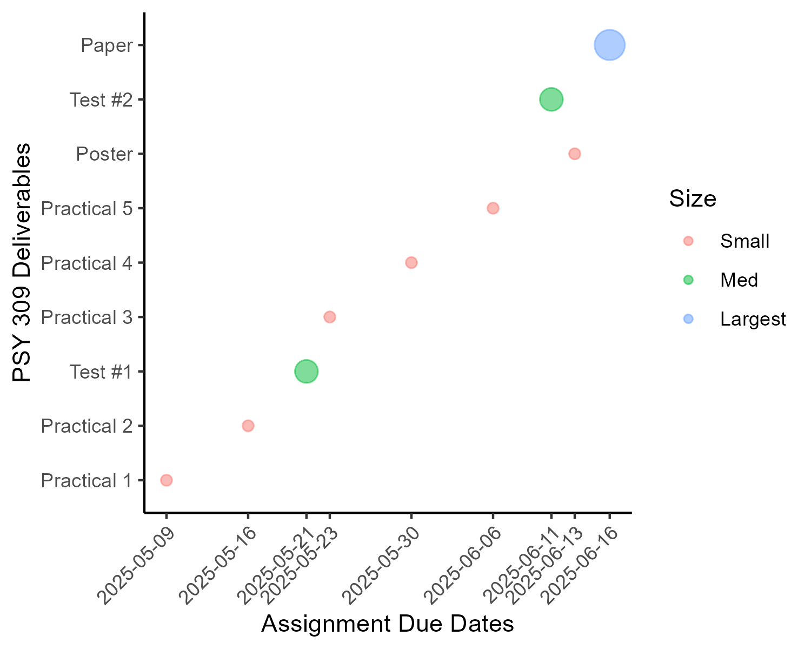

TA Responsibilities
Overview
- Anticipated enrollment = 38 students
The assignments build across the term, so it makes the most sense for each TA to be assigned ~13 students to assess throughout the term.
- We will split the two term tests such that each of you grades 1-2 questions across all of the tests.
Course Deliverables
1. 5x 3% “Practical” assignments
- Each TA marks bi-weekly submissions for ~13 students.
- Practicals are intended to be “bite-sized” pieces of their final paper project.
- Each submission will be graded out of 15 marks.
- A rubric will be provided on Quercus to evaluate the practical submissions.
2. 2x 25% Tests
- Completed on Quercus
- MC will be auto-graded
- Answer keys for SA questions will be provided the day of the test.
3. 5% Poster Presentation
- The purpose of this assignment is to encourage students to complete and understand their analysis for the final project well ahead of the deadline to submit the written report.
- Students will upload a 5-minute video explaining their project and results.
- Mostly graded for completion, but also offers an opportunity to provide feedback about the interpretations.
3. 20% Paper
- “Capstone” project for this course (12-14 pages all-in)
- You will evaluate the same ~13 students as you have graded all semester.
- A detailed rubric will be provided on Quercus to evaluate the essays.
TA Student contact
10 weekly office hours - Please send Jennet your personal zoom links
Remaining hours allocated to student contact in the DDAH form can be used to field emails.
In any situation where students are hostile or you don’t know how to respond to them, feel free to forward their correspondences along to me to deal with. You can count on me to back up your calls!
Course Responsibilities
All of your TA responsibilities can be completed virtually. Psy309 will involve two in-class tests that will be completed on Quercus.
| Assignment | Due_Date | Format | Size | TA |
|---|---|---|---|---|
| Practical 1 | 2025-05-09 | Online | Small | Victoria |
| Practical 2 | 2025-05-16 | Online | Small | Evana |
| Test #1 | 2025-05-21 | Online | Med | All (Split) |
| Practical 3 | 2025-05-23 | Online | Small | Jennifer |
| Practical 4 | 2025-05-30 | Online | Small | Victoria |
| Practical 5 | 2025-06-06 | Online | Small | Evana |
| Poster | 2025-06-13 | Online | Small | All (Split) |
| Test #2 | 2025-06-11 | Online | Med | All (Split) |
| Paper | 2025-06-16 | Online | Largest | All (Split) |
Note That there will be late / deferred submissions for all of the assignments.
